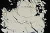

|
|
(For further information on spectroscopy, see:
http://speclab.cr.usgs.gov)
TITLE: Samarium_Oxide GDS36 DESCRIPT
DOCUMENTATION_FORMAT: MINERAL
SAMPLE_ID: GDS36
MINERAL_TYPE: Oxide
MINERAL: Samarium_Oxide
FORMULA: Sm2O3
FORMULA_HTML: Sm2O3
COLLECTION_LOCALITY: REE Standard
ORIGINAL_DONOR: None
CURRENT_SAMPLE_LOCATION: USGS Denver Spectroscopy Laboratory
ULTIMATE_SAMPLE_LOCATION: USGS Denver Spectroscopy Laboratory
SAMPLE_DESCRIPTION:
Spex standard 85.2% Sm Lot No. 07791
For a detailed discussion see: Rowan, Lawrence C., Kingston, Marguerite J., Crowley, James K., Spectral Reflectance of Carbonatites and Related Alkalic Igneous Rocks: Selected Samples from Four North American Localities, Economic Geology, Vol 81, 1986, pp. 857-871.
IMAGE_OF_SAMPLE:

END_SAMPLE_DESCRIPTION.
XRD_ANALYSIS:
40 kV - 30 mA, 6.5-9.5 keV
File:smox36.mdi, sm2o3.rd (smear mount on quartz plate)
References: JC-PDS #06-0117, 13-0083, 13-0168, 15-0813, 19-1114,
25-0749, 31-1201, 33-1146, 42-1464, 43-1029, 43-1030
Found: 16 reflections
Comment: Both patterns have high background and poor
signal-to-noise ratio. The peaks are broad and appear ragged in
the strip chart; there is no resolution of alpha1-alpha2. Pattern
smox36.mdi could not be identified as a single Sm oxide,
oxy-hydroxide, or carbonate, or any other phase by manual methods,
including simple boolean searches of the PDF2 database. A second
pattern was obtained from a new, automated system and processed
using Philips software and Jade (MDI). The Philips search match
yielded a mixture of Pm2O3 (34-536), cubic Sm2O3 (15-813),
and Ba3ZrNb4O15. This result is suspect because promethium (Pm)
does not occur naturally on earth and two reflections at 5.6 and
4.03 Angstroms, characteristic of Pm2O3, are not present. The Jade
search-match routine accesses only minerals; it is possible to
account for most of the reflections with mixtures of three or four
minerals, but there is no reason to believe that these minerals
bear any relationship to each other.
END_XRD_ANALYSIS.
COMPOSITIONAL_ANALYSIS_TYPE: None # XRF, EM(WDS), ICP(Trace), WChem
COMPOSITION_TRACE:
COMPOSITION_DISCUSSION:
END_COMPOSITION_DISCUSSION.
MICROSCOPIC_EXAMINATION:
No observed impurities. G. Swayze.
average grain size gr sz = 4 µm
END_MICROSCOPIC_EXAMINATION.
SPECTROSCOPIC_DISCUSSION:
END_SPECTROSCOPIC_DISCUSSION.
SPECTRAL_PURITY: 1a2a3a4_ # 1= 0.2-3, 2= 1.5-6, 3= 6-25, 4= 20-150 microns
| LIB_SPECTRA_HED: | where | Wave Range | Av_Rs_Pwr | Comment |
|---|---|---|---|---|
| LIB_SPECTRA: | splib04a r 4305 | 0.2-3.0µm | 200 | g.s.= |
| LIB_SPECTRA: | splib05a r 6037 | 0.2-3.0µm | 200 | g.s.= |
| LIB_SPECTRA: | splib06a r 19806 | g.s.= | ||
| LIB_SPECTRA: | splib06a r 19819 | g.s.= |
{kind=link}